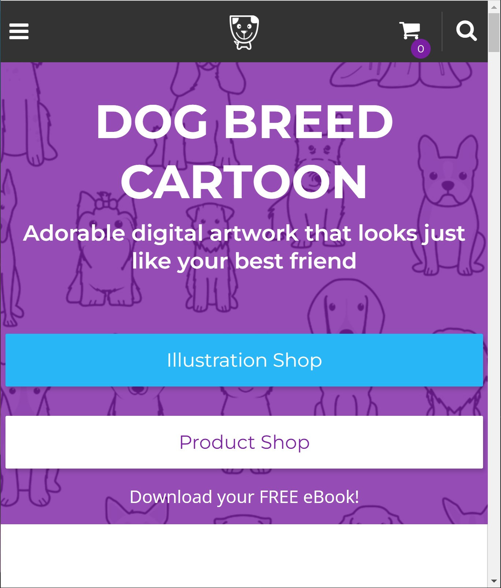
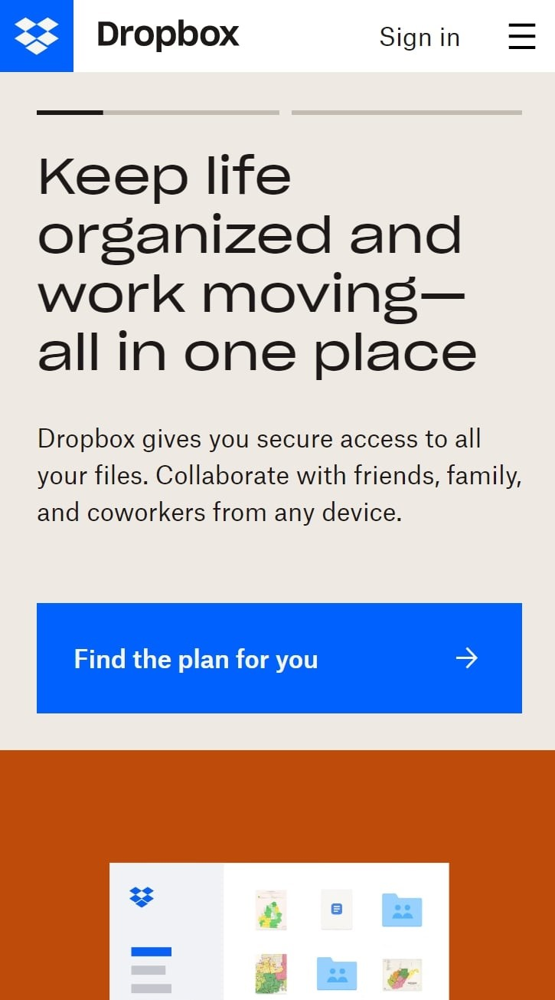
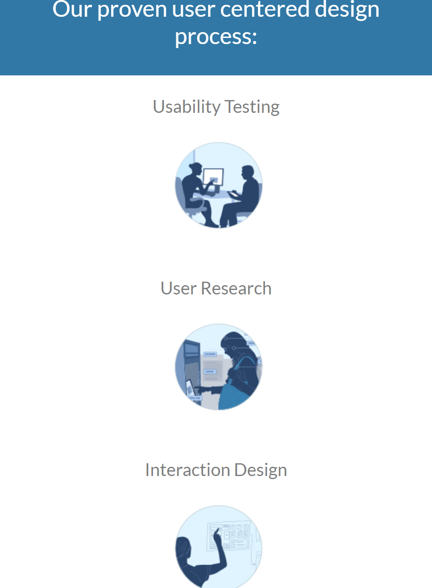

Design Principles Document
Emma Ward
Dog Breed Cartoon
dogbreedcartoon.com This website displays balance very well. It is showing asymmetrical balance, so it is not the same on both the top and the bottom, so it is compeling to look at both parts, which helps to learn about the website and what it's offering.
Dropbox
dropbox.com This website shows contrast in it's use of colors. The users eyes are drawn to the top and the bottom, and the use of different colors makes it clear that there are two sections with unique purposes.
Experience Dynamics
experiencedynamics.com This website shows repetition through it's use of the same circle design to show the different offers present for the user to explore.